<mat-toolbar id="menu-toolbar">
    <div id="buttons-div">
        <button id="match-selection-button" matTooltip="Match selection" disableRipple="true" routerLink="/match-selection" mat-icon-button>
            <mat-icon id="match-selection-icon">video_library</mat-icon>
        </button>
        <button id="about-button" matTooltip="About page" disableRipple="true" routerLink="/match-selection" mat-icon-button>
            <mat-icon id="about-icon">help</mat-icon>
        </button>
    </div>
    <div id="title-div">
        <div id="title-icon-div">
            <p id="main-title-highlit">Highlit</p>
            <mat-icon id="title-icon">live_tv</mat-icon>
            <p id="main-title-me">Me</p>
        </div>
        <mat-label id="title-label">CSGO twitch highlights app</mat-label>
    </div>
    <div id="contact-div">
        <a href="https://github.com/Minifixio" target="_blank">
            
        </a>
        <a href="https://twitter.com/minifixio" target="_blank">
            
        </a>
    </div>

</mat-toolbar>

